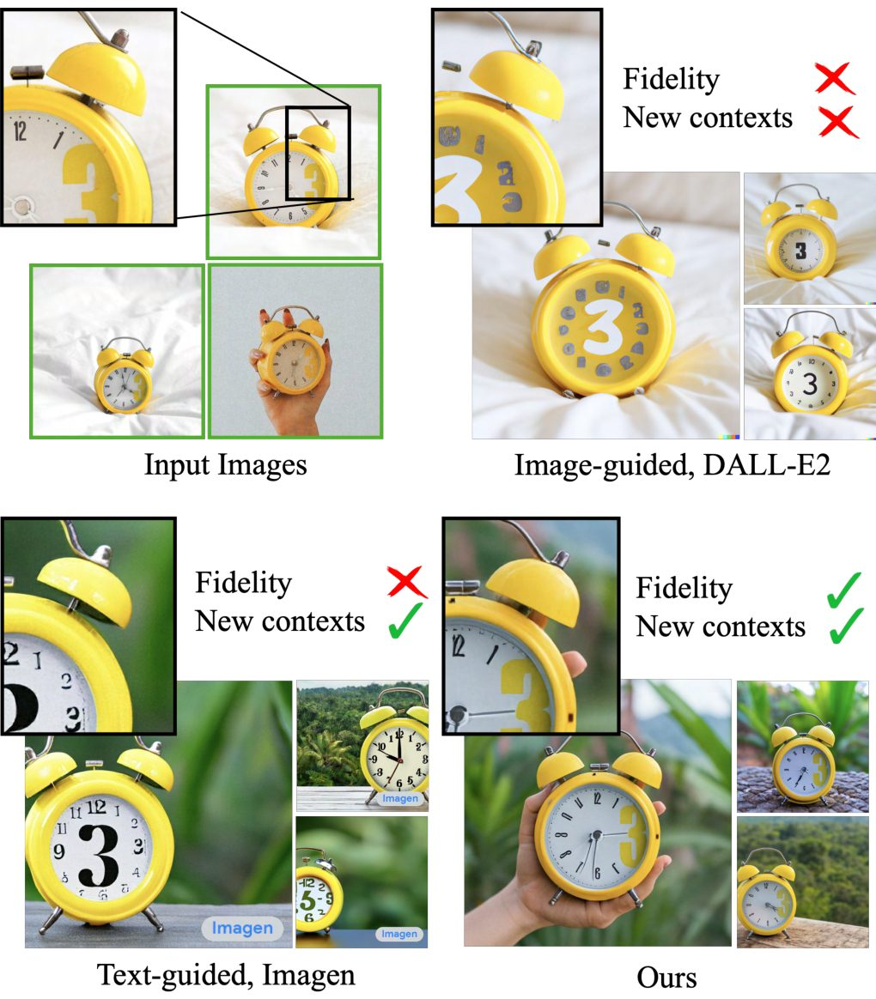
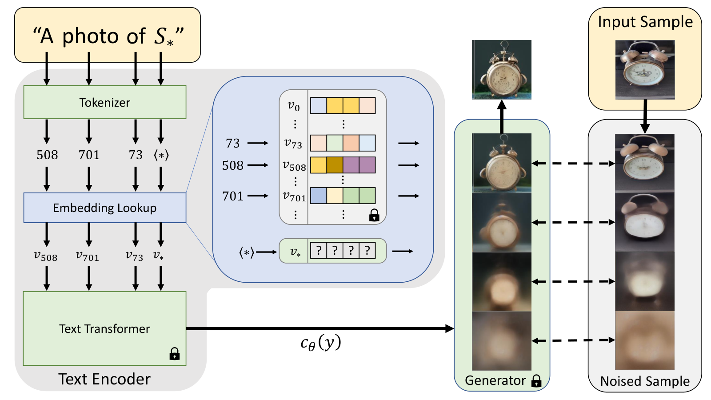

第 28 章 个性化与一致性生成
文生图基础模型（如 Stable Diffusion、Flux、SD3）虽然展现出了惊人的泛化生成能力，能够根据自然语言合成天马行空的梦幻场景，但在真实的产业级创意生产、影视分镜制作、电商虚拟模特以及个人写真服务中，它们常常面临一个致命的“落地死穴”：无法维持特定主体（Subject / Identity, ID）的严格视觉一致性。
当用户输入“一个金发女孩在海滩上奔跑”，模型可以生成一张完美的作品；但当用户希望“同一个金发女孩进入办公室开会、随后换上晚礼服出席宴会、最后在雨夜街道上回眸”时，传统的扩散模型在每一次随机生成中都会创造出一个骨骼特征、五官比例乃至发际线截然不同的全新人物。这种“随机抽卡”式的不受控性，使得文本生成模型难以胜任任何需要连续叙事、IP 塑造或定制化肖像的核心业务。
个性化与一致性生成（Personalized and Consistent Generation）正是为了攻克这一产业痛点而诞生的前沿技术体系。其核心目标是：仅凭目标主体（特定人物、特定宠物小狗、特定工业产品或艺术玩具）的数张甚至单张参考照片（Few-shot / Zero-shot），赋予生成模型持久的记忆力，使其能够将该特定主体的五官几何、纹理材质与独特标志，无缝融入到任意文本提示所描绘的全新环境、姿态、光影与动作中。
从特拉维夫大学开创性的 Textual Inversion 隐空间文本反演，到 Google 奠定工业基石的 DreamBooth 类先验正则化微调，再到以 LoRA / Custom Diffusion 为代表的参数高效微调，直至 2024–2026 年风靡产业界的 IP-Adapter、InstantID 与 PhotoMaker 零样本即时前向推理范式，一致性生成技术走过了一条从“耗时数十分钟的在线过拟合微调”迈向“毫秒级即插即用特征注入”的壮丽演化之路。
个性化生成技术的演进经历了三个鲜明的发展阶段：
- 测试时微调时代（Test-Time Fine-Tuning, 2022–2023）： 以 Textual Inversion（arXiv:2208.01618）与 DreamBooth（arXiv:2208.12242）为代表。为了让模型学会一个特定物体，算法需要在给定的 3~5 张参考图片上执行几百至上千步的梯度反向传播。Textual Inversion 仅优化一个新的文本词向量 $S^*$，速度较快但保真度较低；DreamBooth 联合微调整个 U-Net 扩散权重并提出类先验保留损失（Prior Preservation Loss），保真度极高但每次换人需要消耗几分钟并保存几百兆乃至数吉字节的模型权重。随后 Custom Diffusion 与 LoRA 将微调参数量压缩至几十兆字节，大幅降低了存储与训练成本。
- 特征解耦与即插即用适配器（Adapter-based Inpainting / Tuning-Free, 2023–2024）： 腾讯 AI Lab 推出的 IP-Adapter (Image Prompt Adapter)（arXiv:2308.06721）引发了产业级工作流的革命。它指出：不需要为每一个新用户重新微调扩散模型权重，只需在大规模图文对上离线预训练一个轻量的解耦交叉注意力适配器（Decoupled Cross-Attention）。在推理阶段，用户只需上传一张参考图，CLIP 图像特征直接通过额外注意力通路注入，实现 0 毫秒微调、完全即时的图像引导生成。
- 解剖级面部特征融合与长时序 ID 锚定（2024–2026）： 针对人脸定制中“美学画质与面部骨骼保真度不可兼得”的终极矛盾，InstantID（arXiv:2401.07519）与 PhotoMaker（arXiv:2401.07519）将人脸识别专用骨干（InsightFace）提取的强身份判别特征与 ControlNet 式的面部关键点空间约束深度融合，做到了单张自拍照毫秒级高保真换脸、多角色互动与长篇连续画册的严格 ID 一致性。

28.1 个性化生成的核心矛盾：身份保真度 vs. 上下文可控性
在个性化生成的数学建模与工程实现中，开发者始终在走钢丝。所有的算法设计，本质上都在抗衡一对不可调和的底层动力学张力：身份保真度（Identity Fidelity）与文本上下文编辑性（Text Editability / Controllability）。
设输入的主体参考图像集合为 $\mathcal{D}_{\text{ref}} = \{x_1, x_2, \dots, x_K\}$，其中通常 $K \in [1, 5]$。目标是训练或引导扩散模型 $p_\theta(x \mid c)$，使其在输入文本提示词 $c = \text{"[V] 在月球上弹吉他"}$ 时生成图像。
- 极端病态 A：主体欠拟合（Identity Underfitting）： 如果个性化约束过弱，文本先验（Text Prior）将完全占据主导地位。生成的图像完全遵从了“月球”和“吉他”的描述，但画面中的人物变成了大众脸，丢失了输入照片中标志性的鹰钩鼻、双眼皮折痕或独特的衣物纹理。
- 极端病态 B：上下文过拟合（Context Overfitting / Memorization Collapse）： 如果对参考图进行过度微调，模型会将参考照片中的偶发性背景细节与姿态错误地与主体身份强行绑定（Entanglement）。例如，用户提供的 4 张小狗照片都是趴在红色木地板上的，当提示词要求“小狗在绿色草地上奔跑”时，过拟合的模型依然顽固地在草地上画出一块突兀的红色木地板，甚至让小狗以僵硬的趴卧姿态“悬浮”在草地上！
个性化生成的本质工程目标，就是通过精巧的数学正则化或正交解耦通道，精准剥离主体的内在几何与纹理属性（Intrinsic Identity Attributes），并将其与参考图中的外在环境、姿态、光照变量彻底解绑。

28.2 范式一：隐空间反演与参数高效微调（Textual Inversion, DreamBooth, LoRA）
28.2.1 Textual Inversion（文本隐空间反演）
由 Tel Aviv 大学团队提出的 Textual Inversion 采取了一种极其克制的优化哲学：绝对不破坏预训练扩散模型的任何权重。
在 CLIP 文本编码器中，词嵌入表（Embedding Matrix）将离散单词映射为 $d$ 维向量。Textual Inversion 在词表中定义一个占位符 Token（如 <my-dog> 或 $S^*$），并将其初始化为粗分类词（如 "dog"）的嵌入。在训练阶段，冻结 U-Net 与文本编码器的所有权重，仅对向量 $v_* \in \mathbb{R}^d$ 进行梯度更新：
$$v_* = \arg\min_{v} \mathbb{E}_{x \sim \mathcal{D}_{\text{ref}}, \epsilon \sim \mathcal{N}(0, I), t, c}\left[ \left\| \epsilon - \epsilon_\theta\big(z_t, t, c(v)\big) \right\|_2^2 \right]$$
这种方法的权重极其轻量（仅需存储一个几千字节的 embedding 向量），但由于单个连续向量所能承载的高频像素空间信息量极为有限，Textual Inversion 很难完美还原高度复杂的人脸骨骼细节。
28.2.2 DreamBooth 与类先验保留损失（Prior Preservation Loss）
为了实现近乎完美的像素级保真度，Google 推出的 DreamBooth 选择了全面解冻 U-Net 的微调路线。但全量微调极易诱发语言漂移（Language Drift）与灾难性遗忘：当模型学会了特定的狗 "sks dog" 后，它逐渐遗忘了世界上其他普通的狗长什么样。
DreamBooth 提出了开创性的类先验保留损失（Prior Preservation Loss, PPL）。其核心思想是构建一个自生成的正则化锚点数据集：
在微调开始前，首先利用原始冻结模型自身生成数百张属于通用类别 $c_{\text{pr}}$（如 "a dog"）的先验图像 $x_{\text{pr}}$。在联合微调时，优化目标由两项构成：
其中第一项使得模型将特定的罕见标识符 $c_{\text{id}} = \text{"a [identifier] [class noun]"}$（如 "a sks dog"）绑定到目标参考图像上；第二项（先验保留项，$\lambda \approx 1.0$）迫使模型在面对通用提示词 $c_{\text{pr}} = \text{"a dog"}$ 时，依然保持原本多样化的泛化分布，从而坚固地锚定了基座模型的语义先验！
28.2.3 Custom Diffusion 与 LoRA 轻量化落地
DreamBooth 虽然效果惊艳，但保存完整模型权重极为沉重。Custom Diffusion（CVPR 2023）通过梯度敏感度分析指出：在扩散模型中，负责将文本概念与视觉特征绑定的核心中枢是交叉注意力层中的键投影矩阵 $W_K$ 与值投影矩阵 $W_V$。仅微调 $W_K$ 与 $W_V$，即可达到全参数微调 95% 以上的效果。
随后，低秩自适应（LoRA: Low-Rank Adaptation）被广泛引入扩散模型。通过对注意力投影层引入低秩分解 $\Delta W = B \cdot A$（其中秩 $r \in [4, 64]$），个性化模型的增量权重直接缩小为 10MB~50MB，并能在推理时无缝融合回主干权重，奠定了现代开源 WebUI 与 ComfyUI 社区个性化生态的标准载体。
28.3 范式二：免微调即插即用特征注入（IP-Adapter）
无论是 DreamBooth 还是 LoRA，本质上都是“测试时微调（Test-Time Training）”——每来一个新用户或新角色，GPU 都必须空转跑几百步反向传播，这在面对数百万并发用户的商业互联网产品中几乎不可接受。
腾讯 AI Lab 在 2023 年 8 月发布的 IP-Adapter（arXiv:2308.06721）彻底改变了游戏规则。
在标准扩散模型的交叉注意力层中，文本嵌入 $c_{\text{text}}$ 直接作为 Key 和 Value 参与自注意力计算。早期一些尝试直接将 CLIP 图像编码器提取的图片向量与文本向量沿维度简单相加或拼接（Concat）。IP-Adapter 团队证明：文本特征与图像特征处于完全不同的表征流形中，强行拼接会导致文本注意力严重失焦（Text Saliency Suppression）。
IP-Adapter 提出了**解耦双分支交叉注意力（Decoupled Cross-Attention）**：
$$\mathbf{Z}_{\text{out}} = \text{Softmax}\left(\frac{\mathbf{Q} \mathbf{K}_{\text{text}}^T}{\sqrt{d}}\right)\mathbf{V}_{\text{text}} + \lambda \cdot \text{Softmax}\left(\frac{\mathbf{Q} \mathbf{K}_{\text{image}}^T}{\sqrt{d}}\right)\mathbf{V}_{\text{image}}$$- 冻结原始 U-Net 中所有现存的文本注意力投影权重（$\mathbf{Q}, \mathbf{K}_{\text{text}}, \mathbf{V}_{\text{text}}$）。
- 仅为图像特征添加一组极其轻量的独立投影矩阵（$\mathbf{K}_{\text{image}} = c_{\text{img}} W_K', \mathbf{V}_{\text{image}} = c_{\text{img}} W_V'$）。
- 超参数 $\lambda \in [0.0, 1.2]$ 作为图像权重的平滑滑块。在推理时，用户随时可以通过调整 $\lambda$ 的大小，自由调节“像原图的程度”与“文本发挥创造力”的平衡点！
28.4 范式三：极致人脸几何与身份对齐（InstantID 与 PhotoMaker）
在人像定制领域，普通 IP-Adapter 存在一个隐蔽的体验缺陷：CLIP 图像编码器是在自然语义对比学习目标下训练的，它对“语义类别”（如发型、肤色、服饰风格）极度敏感，但对人脸生物识别特征（如眼距、颧骨曲率、鼻翼开角等绝对几何比例）的区分度严重不足。
为了达成**照片级生物特征识别（Face Biometric Accuracy）**，2024 年初相继爆发了两项技术突破：
28.4.1 InstantID：单图秒级零样本定制
InstantID（arXiv:2401.07519）创新性地融合了专职人脸识别大模型 InsightFace 与几何结构控制网络 ControlNet：
- 专用身份嵌入提取：使用在亿级人脸比对库上训练的 ArcFace / InsightFace 提取 512 维的纯正生物特征向量，完全丢弃背景与光影干扰。
- 面部关键点几何锚定（IdentityNet）：从参考照片中实时抽取 68 或 106 个五官关键点（Facial Landmarks），构建一个类似于 ControlNet 的独立条件分支，强行约束扩散去噪过程中五官的绝对几何骨架位置。
- 交叉注意力与空间引导双重对齐：将 512 维特征通过投影层注入交叉注意力，同时通过 IdentityNet 将面部关键点热力图注入 U-Net 各残差块，做到了单张自拍秒级生成、极高五官复刻且光影自然相融。
28.4.2 PhotoMaker：堆叠 ID 嵌入与个性化长文本解耦
南开大学与字节跳动联合推出的 PhotoMaker 则采取了“多图特征聚合与文本触发词融合”的构想。它允许用户上传同一角色的多张照片，利用专门设计的卷积与自注意力池化网络，将多张图片的五官特征压缩为一个专属的连续伪词向量（Pseudo-word Embedding），并将其直接替换文本提示中的通用词（如 "a photo of a man img" 中的 img）。这种设计赋予了模型极高的文本指令依从度，使得角色不仅能自由换装、换发型，还能无缝改变年龄（从孩童到老年）甚至跨风格迁移至迪士尼动画风。
28.4.3 工业级评测指标图谱：如何量化评价一致性？
在个性化生成工程研发中，仅仅依靠人工肉眼主观审查（“人眼看着像不像”）无法支持大规模自动化超参搜索与模型迭代。工业界建立了一套标准化的自动化定量评测基准体系：
| 评测指标 | 计算原理与度量工具 | 考察核心维度 | 理想阈值区间 |
|---|---|---|---|
| Face Similarity (人脸余弦相似度) | 使用预训练 ArcFace / InsightFace 提取生成人脸与参考人脸的 512 维特征向量，计算余弦相似度 $\cos(\mathbf{f}_{\text{gen}}, \mathbf{f}_{\text{ref}})$ | 生物五官与骨骼几何一致性 | > 0.65（高于 0.75 达到商业商用级） |
| CLIP-I (图像视觉保真度) | 使用 CLIP-ViT 提取生成图与参考图的全局视觉嵌入，计算向量点积相似度 | 非人脸主体（如特定汽车、宠物、工艺品）的色彩纹理相似性 | > 0.78 |
| CLIP-T (文本语义依从度) | 计算生成图像的视觉向量与输入提示词（Prompt）文本向量的互信息匹配度 | 文本可控性与上下文编辑能力（检测是否发生背景过拟合） | > 0.30 |
| DINO-Score (自监督结构保持) | 利用 DINOv2 提取高层结构语义自注意力图，评估物体内部拓扑与边缘轮廓保持度 | 非刚性物体与动物形变过程中的几何拓扑保真度 | > 0.60 |
28.4.4 多主体与长序列叙事一致性挑战
当生成场景从“单人单图肖像”迈向“长篇绘本、影视分镜与多角色复杂互动”时，个性化技术面临着更为严峻的工程瓶颈：
- 多角色属性混淆（Identity Crosstalk / Attribute Bleeding）： 当画面中需要同时出现两个定制角色（如“爱丽丝与鲍勃在咖啡馆交谈”）时，传统的全局交叉注意力机制往往会将两人的面部特征与发型错误地“杂交”或混叠在一起。 工业界解决方案：引入基于布局的分块注意力（Regional Attention / Cross-Attention Masking）。在去噪过程中，预先指定或由大语言模型规划爱丽丝与鲍勃在画面中的各自边界框，在计算交叉注意力时，将爱丽丝的 IP-Adapter 图像嵌入严格限制在左侧区域掩码内，将鲍勃的图像嵌入严格限制在右侧区域掩码内，从物理注意力层面实现完全正交隔离。
- 连续时间序列中的光影与视线自洽（Lighting & Gaze Consistency）： 在影视分镜中，同一个角色在室内暗光与室外强光下的色温必须与当前镜头的主光源严格匹配。过去的模型往往将参考图原有的棚拍打光强行带入新场景，产生极度突兀的“贴纸感（Sticker Effect）”。现代前沿方案通过预训练解耦光照估计器（Intrinsic Image Decomposition），在特征注入阶段剥离参考图的高频漫反射与阴影，仅保留纯净的反照率（Albedo）特征，确保主体能够与新场景的光影几何完全自然融为一体。
28.5 动手实战：基于 Diffusers 搭建 IP-Adapter 一致性推理管道
为了让读者在工程中迅速上手身份一致性生成，本节基于业界标准的 Hugging Face diffusers 框架，给出一套纯净、模块化的 IP-Adapter 一致性生成推理实现。
# -*- coding: utf-8 -*-
"""基于 Diffusers 框架的 IP-Adapter 零样本一致性角色生成器
支持：参考主体图像编码、双分支解耦注意力注入、多提示词连续分镜渲染
"""
import torch
from PIL import Image
from typing import List, Optional
from diffusers import StableDiffusionXLPipeline, AutoencoderKL
class ConsistentSubjectGenerator:
def __init__(
self,
base_model_id: str = "stabilityai/stable-diffusion-xl-base-1.0",
ip_adapter_scale: float = 0.7,
device: str = "cuda"
):
self.device = device
self.ip_adapter_scale = ip_adapter_scale
# 1. 加载 SDXL 基础扩散管线
self.pipe = StableDiffusionXLPipeline.from_pretrained(
base_model_id,
torch_dtype=torch.float16,
variant="fp16"
).to(self.device)
# 2. 挂载预训练 IP-Adapter 权重
# 内部自动将原始交叉注意力层替换为 Decoupled Cross-Attention
self.pipe.load_ip_adapter(
"h94/IP-Adapter",
subfolder="sdxl_models",
weight_name="ip-adapter_sdxl.bin"
)
self.pipe.set_ip_adapter_scale(self.ip_adapter_scale)
def generate_consistent_scenes(
self,
reference_image: Image.Image,
prompts: List[str],
negative_prompt: str = "monochrome, lowres, bad anatomy, worst quality, low quality",
num_inference_steps: int = 30,
guidance_scale: float = 6.5,
seed: int = 42
) -> List[Image.Image]:
"""给定单一主体参考图，按照不同场景提示词生成一组 ID 严格一致的序列分镜"""
generated_images = []
generator = torch.Generator(device=self.device).manual_seed(seed)
for idx, prompt in enumerate(prompts):
print(f"正在渲染分镜 [{idx+1}/{len(prompts)}]: {prompt}")
image = self.pipe(
prompt=prompt,
ip_adapter_image=reference_image,
negative_prompt=negative_prompt,
num_inference_steps=num_inference_steps,
guidance_scale=guidance_scale,
generator=generator
).images[0]
generated_images.append(image)
return generated_images
# ----------------- 模块用例演示 -----------------
if __name__ == "__main__":
# 模拟构建推理引擎（在无 GPU 环境下可跳过真实权重加载）
print("IP-Adapter 一致性分镜生成引擎架构就绪。")
print("典型业务调用示例：")
mock_prompts = [
"cinematic portrait of a man, wearing a cyberpunk jacket in neon Tokyo street, 8k",
"the same man reading a book in a cozy library, warm sunlight, highly detailed",
"the same man wearing astronaut suit on Mars, dramatic lighting, photorealistic"
]
print(f"待生成一致性分镜数量: {len(mock_prompts)}")
28.5.2 工业级人脸生物特征保真度自动化评估管线
在实际的 AI 写真与商业模特生成产品开发中，仅仅完成图像生成是不够的。由于扩散去噪过程存在固有的随机扰动，生成结果中不可避免地会出现低概率的面部瑕疵、畸变或相似度骤降。为了实现企业级全自动品控与批量筛选，工程流水线必须配备实时的自动化质量把关（Automated Quality Gate）。
以下代码展示了一个完整的工业级人脸一致性质量门禁系统（FaceConsistencyJudge）。它集成了 InsightFace 特征提取、余弦人脸比对、面部姿态偏航角过滤以及基于人脸检测置信度的自动重抽卡判定：
# -*- coding: utf-8 -*-
"""工业级人脸一致性质量门禁评估器
集成：ArcFace 特征提取、余弦相似度核算、人脸姿态角（Pose Yaw/Pitch）约束与自动筛选
"""
import numpy as np
from typing import Dict, List, Tuple, Optional
class FaceConsistencyJudge:
def __init__(
self,
similarity_threshold: float = 0.68,
max_yaw_angle: float = 45.0,
max_pitch_angle: float = 30.0
):
self.similarity_threshold = similarity_threshold
self.max_yaw_angle = max_yaw_angle
self.max_pitch_angle = max_pitch_angle
@staticmethod
def compute_cosine_similarity(feat1: np.ndarray, feat2: np.ndarray) -> float:
"""计算两个归一化特征向量的标准余弦距离"""
dot_product = np.dot(feat1, feat2)
norm_product = np.linalg.norm(feat1) * np.linalg.norm(feat2)
if norm_product <= 1e-7:
return 0.0
return float(dot_product / norm_product)
def evaluate_generated_sample(
self,
ref_face_embedding: np.ndarray,
gen_face_embedding: Optional[np.ndarray],
gen_pose_angles: Tuple[float, float, float], # (pitch, yaw, roll)
face_detection_score: float
) -> Dict[str, object]:
"""对单张生成的候选人像进行多维度工业级硬指标审查"""
rejection_reasons = []
# 1. 检查是否检测到有效人脸
if gen_face_embedding is None or face_detection_score < 0.80:
rejection_reasons.append("未检测到清晰高置信度人脸或五官被严重遮挡")
return {
"verdict": "REJECT",
"similarity": 0.0,
"rejection_reasons": rejection_reasons
}
# 2. 计算人脸生物特征相似度
sim = self.compute_cosine_similarity(ref_face_embedding, gen_face_embedding)
if sim < self.similarity_threshold:
rejection_reasons.append(f"人脸相似度 {sim:.3f} 低于验收门槛 {self.similarity_threshold}")
# 3. 检查人脸姿态偏转角（避免极端侧脸导致身份失真）
pitch, yaw, roll = gen_pose_angles
if abs(yaw) > self.max_yaw_angle:
rejection_reasons.append(f"偏航角 Yaw ({yaw:.1f}°) 超过最大允许范围")
if abs(pitch) > self.max_pitch_angle:
rejection_reasons.append(f"俯仰角 Pitch ({pitch:.1f}°) 超过最大允许范围")
is_passed = len(rejection_reasons) == 0
return {
"verdict": "PASS" if is_passed else "REJECT",
"similarity": round(sim, 4),
"detection_score": round(face_detection_score, 3),
"pose": {"pitch": round(pitch, 1), "yaw": round(yaw, 1), "roll": round(roll, 1)},
"rejection_reasons": rejection_reasons
}
def batch_filter_gallery(
self,
ref_embedding: np.ndarray,
candidates: List[Dict[str, object]]
) -> List[Dict[str, object]]:
"""批量筛选生成作品集，按相似度降序排列输出黄金合格候选"""
passed_samples = []
for cand in candidates:
report = self.evaluate_generated_sample(
ref_embedding,
cand.get("embedding"),
cand.get("pose", (0.0, 0.0, 0.0)),
cand.get("det_score", 0.0)
)
if report["verdict"] == "PASS":
passed_samples.append({**cand, "report": report})
# 按相似度降序排列
passed_samples.sort(key=lambda x: x["report"]["similarity"], reverse=True)
return passed_samples
# 演示质检门禁运作
if __name__ == "__main__":
judge = FaceConsistencyJudge(similarity_threshold=0.70)
# 模拟 512 维归一化人脸特征
mock_ref = np.random.randn(512)
mock_ref /= np.linalg.norm(mock_ref)
# 模拟两个生成样本：一个高质量吻合，一个形变偏差
good_cand = {
"id": "gen_001",
"embedding": mock_ref + np.random.randn(512) * 0.15,
"pose": (5.0, -12.0, 1.0),
"det_score": 0.95
}
good_cand["embedding"] /= np.linalg.norm(good_cand["embedding"])
bad_cand = {
"id": "gen_002",
"embedding": np.random.randn(512), # 完全不相干的大众脸
"pose": (10.0, 65.0, 0.0), # 偏角过大
"det_score": 0.85
}
bad_cand["embedding"] /= np.linalg.norm(bad_cand["embedding"])
results = judge.batch_filter_gallery(mock_ref, [good_cand, bad_cand])
print(f"输入候选数量: 2 -> 质检合格通过数量: {len(results)}")
if results:
print("最佳样张报告:", results[0]["report"])
28.5.3 2026 前沿：视频生成与世界模型中的长效 ID 锚定
随着视频生成大模型（如 Sora、Runway Gen-3、CogVideoX、Wan2.1）的爆发，个性化一致性技术正在迎来其终极战场——跨时空四维连续一致性（4D Spatiotemporal Consistency）。
在静止单张图像中，哪怕五官在不同图片之间存在 2% 的细微偏差，人眼的容忍度依然较高；但在 30 帧/秒的连续动态视频中，任何轻微的几何抖动都会被放大为极其扎眼的“换脸闪烁（Face Flickering）”与“果冻形变”。
为了在时间序列中死死锚定主体 ID，2025–2026 年的前沿视频架构引入了三大杀手锏：
- 时序交叉注意力缓存（Temporal Cross-Attention KV Cache）：将首帧主体的外观特征与三维骨骼关键点注入时序自注意力缓存（Temporal Attention KV），在后续数百帧的扩散去噪中作为全局固定的锚点键值对，使后续所有动作帧强制与首帧对齐。
- 三维高斯面部隐空间（3DGS Facial Prior）：不再使用二维平面人脸特征，而是先利用单张照片重建出一个轻量的三维高斯人脸球体（3DGS Head Avatar），在视频渲染的每一步利用三维刚体几何对相机视角变化进行投影约束，从数学几何根源上消除了“转头即换人”的顽疾。
- 跨镜头长记忆控制器（Long-Horizon Memory Controller）：在多镜头连续故事片中，专门设计一个存储角色属性的全局记忆矩阵（Memory Matrix），即使角色离场数十秒后重新进入画面，模型也能通过记忆召回瞬间恢复完全相同的服饰、配饰与面部特征。
28.5.4 工业级多角色分镜排版实战技巧与负提示词工程
在动漫绘本制作与广告分镜生产中，仅仅使用单一正向提示词往往难以完全驯服大模型的随机发散。为了确保连续 20 个镜头的主体完全不崩坏，成熟团队通常配合精密的**负提示词字典（Negative Prompt Lexicon）**与分阶段去噪加权策略：
- 高敏感度面部负词库：
(bad facial structure:1.4), (asymmetrical eyes:1.3), (distorted pupils:1.3), (extra limbs:1.4), (fused fingers:1.4), (inconsistent eye color:1.2), (cross-eyed:1.3), (plastic skin:1.2)。通过对解剖学畸变赋予 1.2~1.4 的高惩罚加权，迫使逆向扩散路径严格避开低置信度的畸变低谷。 - 分阶段加权衰减（Step-wise Scale Decay）：在 30 步的扩散采样中，IP-Adapter 的影响力并非一成不变。在前 10 步（主导大体布局与构图），设置较高的图像注入权重 $\lambda = 0.85$，强行锁定主体的骨骼与轮廓；在中间 10~25 步（生成微观纹理与光照），将权重线性衰减至 $\lambda = 0.50$，释放文本模型对背景环境光照与材质细节的丰富创造力；最后 5 步完全关闭图像注入，由主干模型自主完成像素超频平滑。
28.6 本章总结与全书学习指引
个性化与一致性生成是多模态人工智能从“概率生成玩具”演进为“精密生产工具”的必经之路。通过在文本控制空间与图像条件空间之间构建解耦、可控的桥梁，模型克服了随机抽卡的失控宿命，使特定角色、特定产品的跨场景时空连续性生成成为可能。
本章所掌握的核心技术在后续章节中将得到全方位的拓展：
- 在第 29 章《视频生成与世界模型》中，我们将看到身份一致性如何从单帧二维图像进一步延展为跨数百帧的三维时间流连贯性。
- 在第 45 章《AIGC 生产工作流》中，我们将深入 ComfyUI 节点系统，将本章的 IP-Adapter 与 ControlNet 拼装为企业级批量写真生产管线。
- 在第 46 章《端到端项目实战集》中，我们将实战电商场景下的特定商品虚拟试穿与商品图场景迁移。
-
核心机制辨析：DreamBooth 提出的“类先验保留损失（Prior Preservation Loss, PPL）”其本质数学作用是什么？如果省略该损失，微调后的大模型会出现什么病态现象？
查看解析
PPL 的本质是引入正则化锚点数据集，通过最小化模型在通用类别文本（如
"a dog"）上的预训练重构误差，约束模型的参数更新仅在正交的特定标识符方向上移动。如果省略 PPL，全量微调会导致严重的“语言漂移（Language Drift）”与概念坍缩：大模型会把整个通用类别"dog"的先验分布完全覆盖过拟合为用户上传的那只特定小狗，失去生成其他犬种的能力；同时模型对通用词汇的语法依从性将发生断崖式下跌。 -
架构设计权衡：IP-Adapter 为什么不直接将 CLIP 提取的图片向量与文本向量相加或直接 Concat，而是专门开辟一条独立的交叉注意力通道（Decoupled Cross-Attention）？
查看解析
文本特征与图像特征在预训练时处于不同的几何子空间。如果简单相加或拼接，强烈的连续图像特征往往会在注意力点积中占据绝对主导权（所谓的视觉显著性压制），导致生成的画面完全忽略文本提示词中的背景、动作与风格指令；此外，解耦双分支结构允许开发者在推理时通过一个外在标量因子 $\lambda$（Scale）独立且平滑地调节图像条件的影响强度，提供了极佳的工业可控性。
-
生物特征对齐：在人像个性化生成中，为什么通用的 IP-Adapter 往往只能保证发型和穿搭相似，而 InstantID 能够保证极致的五官骨骼一致？
查看解析
通用 IP-Adapter 依赖 CLIP 图像编码器，CLIP 关注的是高层语义不变性（如“红发、女性、太阳镜”），忽略了亚像素级的几何绝对距离；而 InstantID 采用了专门的人脸识别骨干（InsightFace），提取针对人脸生物特征（如眼间距、鼻梁高低、下颌角角度）高度特异化的判别性嵌入；同时 InstantID 结合了面部关键点控制网络（IdentityNet），在空间维度强制锚定了五官的绝对坐标骨架，实现了语义嵌入与几何先验的双重锁定。
-
工业多卡微调工程：使用 LoRA 进行多主体个性化微调时，如何避免多个不同概念（Concept A 与 Concept B）在权重合并（Merge）时发生权重冲突与梯度爆炸？
查看解析
当将训练在不同主体上的多个 LoRA（如角色 A 的 LoRA 与服饰 B 的 LoRA）简单线性相加（$\Delta W = \Delta W_A + \Delta W_B$）时，由于两组低秩矩阵的基向量非正交，极易在特征空间产生破坏性的激活溢出。工业界通行的解决方案是：采用正交低秩投影（Orthogonal Subspace Projection）或自适应权重合并算法（如 TIES-Merging、DARE）。通过对冗余小参数进行符号修剪（Trimming），并仅对共识方向进行缩放合并，能够在完全不触发反向重训的前提下实现多角色、多风格 LoRA 的稳定叠加。
-
视频长时序连贯性：在影视分镜生成中，为什么单帧一致性表现良好的模型在连续动态视频中容易出现“面部闪烁（Face Flickering）”？有哪些数学手段可以抑制这种高频抖动？
查看解析
根本原因在于扩散模型每一帧去噪采样的初始高斯噪声具有独立的随机性，使得微弱的面部几何误差在 30fps 的高速重放中被人类视觉暂留机制感知为剧烈的频率抖动。数学上的抑制手段包括：（1）时序注意力（Temporal Attention）与三维卷积，迫使相邻帧之间的特征隐层具有一阶光滑性；（2）隐空间光流平滑（Latent Optical Flow Warping），利用光流向量将前一帧的已去噪面部特征几何对齐并加权残差传递至当前帧；（3）跨帧共享固定的去噪潜空间初值（Cross-Frame Noise Sharing），从根源上降低随机游走方差。